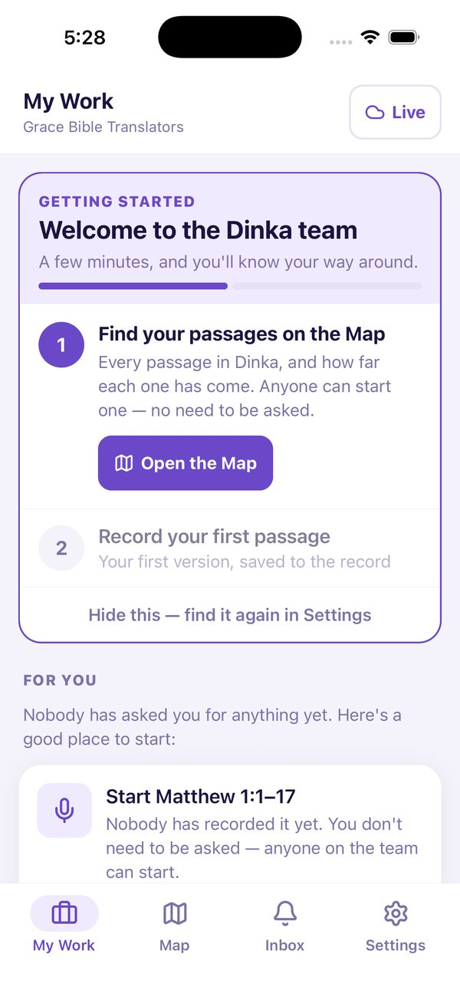
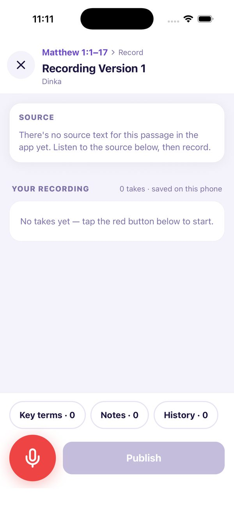
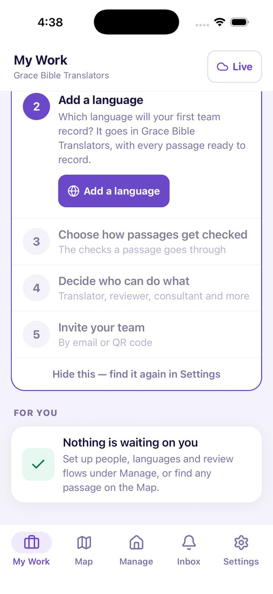
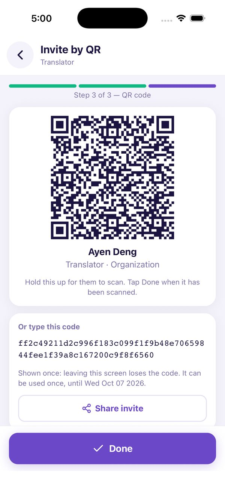
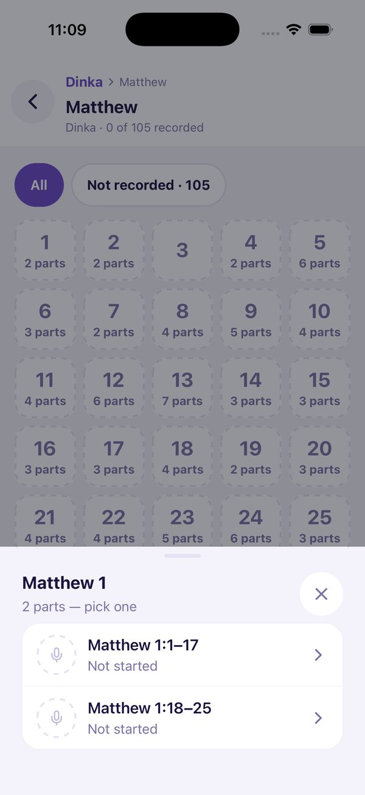
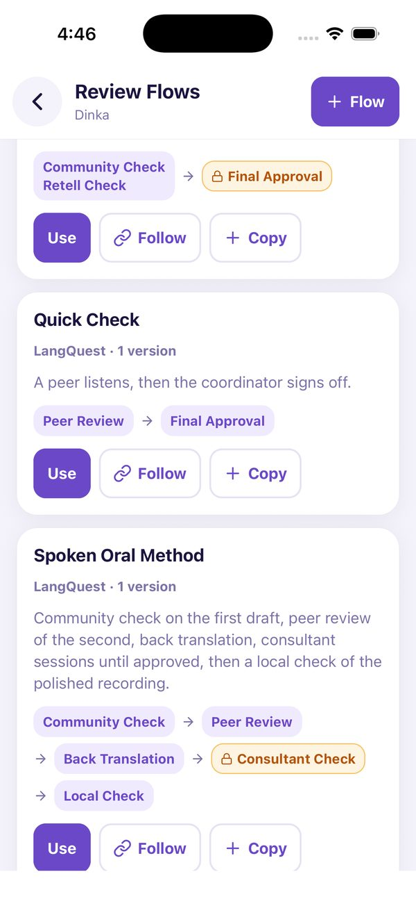
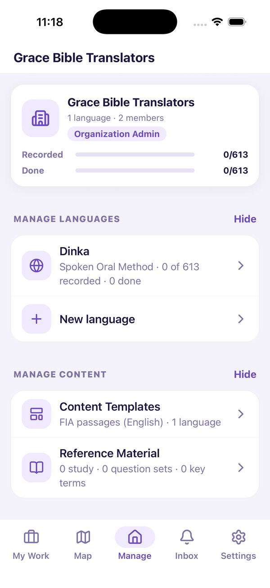
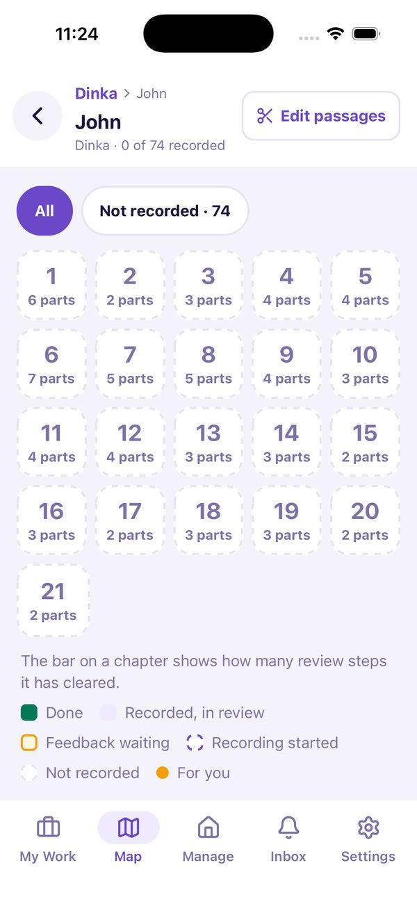

OBT Table · ETEN Summit 2026
Oral Bible translation, organized.
For organizations already doing OBT: easy, flexible, powerful, and mobile.


→ to begin · N notes · G whole path
Setting: LangQuest Next to the OBT Table at the ETEN Summit, Tuesday 9am. Arranged by JoEllen Magnus; Andy Kellogg asked for a short talk plus a live demo on a phone. Jen and Stephen (Word Collective) may join to answer how it is used in real life and how it was tested. Caleb will not be there.
No projector? The deck is a plain folder: open index.html offline on a laptop and gather the table round it, or work from your phone. Keep the phone demo ready either way: pane 4 (set up, QR) and pane 5 (record) are the best places to switch to it.
About 15 minutes: roughly a minute per pane, a little longer on the AI pane (12) and the questions (13).
Audience: translation organizations that already run an OBT process. Open with respect for the method they have. The whole deck says: we carry your method, we do not replace it.
Arc: pain (2) → promise (3) → Easy (4–5) → Flexible (6–7) → Mobile (8) → Powerful (9) → proof (10) → support (11) → AI with Aquilla (12) → questions (13) → next step (14).
You already have a method
Your method works. Tracking it is the hard part.
Everywhere
Phones, cards, chat apps.In someone’s head
Spreadsheets and memory.Weeks of silence
Then it all arrives at once.They move on
Context leaves with them.LangQuest carries your method. It does not replace it.
Ask the room: "Where does your team lose track of the work?" Take one or two answers before clicking.
Four clicks, one card each, then the foot line. These come from the Singapore field framing: late problems, lost context, a key person away, internet gone. They are not quotes from named people.
What you get
Easy. Flexible. Powerful. In your pocket.
Five steps to start
Then invite by QR.Your process
Your steps. Your roles.The whole picture
Every language and passage.Offline for weeks
iPhone and Android.This is the map for the next ten minutes. Say the four words, then let them watch each one proved in turn.
Phones: iPhone and Android builds are live in the stores.
Easy · Set up
Five steps. Join by QR.
- Name your organization
- Add a language
- Choose how passages are checked
- Set roles
- Invite your team


The left phone is the real onboarding checklist. The right phone is the QR invite, the answer to "my translators do not have email." The QR code works once and expires.
If there is time, say what a new member sees: a welcome screen showing who invited them and their role, then a short getting-started card.
Easy · Record
Record in cards. Fix one card.
- Re-record or reorder a card. No waveform editing.
- Pause or check key terms while recording, without disrupting the final audio.
- Earlier takes are never overwritten.

Pick a passage on the map, tap the red button, speak. That is the whole loop for a translator. Voice detection splits speech into small audio cards as you talk.
Why cards: a small mistake costs one card, not the whole recording. Audio is stored by hash and never changed, so history is safe.
Pausing and checking key terms mid-recording is the translator-side helper; it does not change the final audio.
Flexible · Review
Your review, as steps.
- You choose the steps and their order.
- Optional or required. Any, majority or unanimous.
- Start from a ready-made flow, then adjust.

This is the answer to "does it force us into someone else’s workflow?" It does not. The stages are yours. The flow strip is an example; offer to configure their real process during a pilot. A ready-made flow such as Spoken Oral Method can be copied and adjusted.
Honest limit: LangQuest records and shows review. It does not certify a translation or replace local judgment.
Flexible · Structure
Your structure. Your people. Any language.
Books, pericopes, passages
With reference material for each.Roles you define
Record, review, assign, manage, view.Audio-first
No written form needed.Your organization owns the recordings.
Ownership up front because it is the first worry: recordings belong to the organization. Default is all rights reserved; they can open to CC BY, BY-SA, BY-NC and so on later, but cannot be made more closed once copies exist.
Moving a passage past a review step is its own permission, and the reason is logged. Templates, flows and reference material are library documents you can publish, share, copy or follow.
Mobile · Offline
Built for weeks without signal.
Dashed phones are offline. They keep recording; when a connection appears they catch up. Nobody waits for them.
Honest limit, say it before they ask: work that has not synced lives only on that phone. A lost phone loses unsynced work. Sync when you can.
Phones need not be top tier, but buy from reputable sellers: counterfeit phones can report fake storage and then lose recordings.
Powerful · The whole picture
Every language. Every passage. Who is waiting.
- Status comes from the record, never typed by hand.
- See progress by language, book and chapter.
- Ask for work by voice note, with a date.
- Belong to several organizations and switch.


"Powerful" here means visibility and trust in the numbers. Because status is derived from the record, there is no field someone forgot to update. Coordinators also see what is blocking progress.
The organization dashboard reads server-side summaries; totals roll up from the languages a person is allowed to see. Check that the portfolio dashboard is live in the build you demo.
Already in the field
Teams are using it. And finishing.
recording records, as of November 10
new projects just committed by Illuminations Asia partners, from 13 organizations 2 weeks ago
1,087,170 recording records as of Nov 10. Every Language: from the Singapore overview deck, "a couple of audio Bibles". The 33 projects across 13 organizations were committed by Illuminations Asia partners at the Singapore workshop about two weeks ago. They are commitments to try, not live deployments. Say so.
Benin cluster projects with Wycliffe Benin have been working since March. Confirm Wycliffe Benin is happy to be named.
Help when you need it
Learn it in your language. Get help any hour.
15 localized YouTube channels
How-to videos in your teams’ languages.Kingdom Cloud Services
Covers the hours Frontier is offline.Free to use.
Two answers to "who helps my translators when something breaks?" Tutorial channels first (15 localized channels), then the Kingdom Cloud Services helpdesk covering time zones when the Frontier team is offline.
Cost: LangQuest is free. Say it once here and once at the end. No prices appear anywhere in the deck.
AI · With Aquilla
LangQuest keeps the audio. Aquilla adds text and AI.
Hand over a folder
Claude and Aquilla build the project from your files.Audio to text
Transcribe oral translations.One project
Start in LangQuest. Continue in Aquilla.Animation: audio cards leave LangQuest and arrive in Aquilla as text. It shows the direction of the work, not a live sync.
CONFIRM status of each card before presenting, and say it plainly. From the October calls: the folder import (USFM, audio, timings via Claude + Aquilla) was shown working on a Blackfoot New Testament. The oral-to-text transcription project (11 languages) is underway. Linking a LangQuest language to an Aquilla project was discussed as the short-term plan. Do not promise dates. Phrase: "shown working", "underway", "planned".
Aquilla in one line: the web tool for text translation and AI-assisted project management. You choose what to switch on; everything stays in your review process, and a machine never approves. If a skeptic asks: recording, review, approval, sync and dashboards need no AI at all; an AI agent working through Aquilla sees only what the signed-in user may see (2026-10-27 security call); Aquilla uses zero-data-retention models (2026-10-28/29). CONFIRM both before presenting. Audio stays on the phone by default; sending audio to a server is an opt-in. Key-term hints (decision 54) are a plan, not live.
FAQs
“Our team is not technical.”
Five steps. QR join. No email needed.“We have no internet.”
Built for that. Sync when you can.“Who owns the recordings?”
Your organization.“Does it replace consultants?”
No. Your reviewers decide.“What if a phone is lost?”
Synced work is safe. Unsynced work is not.“Can we get our audio out?”
Yes. Export or API.Six clicks. Answer each in one sentence, then stop. If a question comes up that is not here, say "good question" and write it down.
Ownership: you pick the license and it can only open up. Review: LangQuest does not certify a translation. Lost phone: work that has not synced lives only on that phone. Export: from the website, and API access is available; check the wording before presenting. Account deletion exists, and the organization is notified.
Cost: LangQuest is free. No price appears anywhere in the deck.
Next step
Start with one language.
- Pick a coordinator and a language.
- Share your process. We set up the steps.
- Record, review, sync. We support you.
It is free. Try it on your phone with us today, or write to ryder@frontierrnd.com.
Add a WhatsApp number to the contact line if you want one. Invite Jen or Stephen to say a word on real-life use here. The ask is small on purpose: one language, one coordinator, one full cycle.
A nomination starts a conversation; it does not commit a team before they are ready. Keep that promise.
Funding: some regions have separate funding for oral projects (Illuminations Asia in Singapore). Do not promise funding here. Point to Koos for funding questions.
Questions?